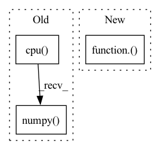

Pattern ID :6010

Before Change
res = torch.from_numpy(np.array(out))
res = F.upsample(res, size=gt.shape, mode="bilinear", align_corners=False)
res = res.sigmoid().data.cpu().numpy().squeeze()
res = (res - res.min()) / (res.max() - res.min() + 1e-8)
print("--> save results: {}".format(SAVE_PATH+name))
imageio.imwrite(SAVE_PATH+name, res)
After Change
// save results
res = mindspore.Tensor(res)
res = mindspore.ops.Sigmoid()(res)
res = mindspore.nn.ResizeBilinear()(res, (h, w))
res = (res - res.min()) / (res.max() - res.min() + 1e-8)
res = res.asnumpy().squeeze()
imageio.imwrite(save_path+img_name.replace(".jpg", ".png"), res)
In pattern: SUPERPATTERN
Frequency: 4
Non-data size: 3
Instances
Fragment ID: 21006416
Project Name: gewelsji/dgnet
Commit Name: f82c53433a67c0ed8d98385254a023d800a1335c
Time: 2022-11-18
Author: gepengai.ji@gmail.com
File Name: lib_ascend/inference_om.py
M Class Name: AnonimousClass
N Class Name: AnonimousClass
M Method Name: infer(4)
N Method Name: infer(3)
M Parent Class:
N Parent Class:
M File Name: lib_ascend/inference_om.py
N File Name: lib_ascend/inference_om.py
M Start Line: 41
M End Line: 63
N Start Line: 45
N End Line: 86
'>
Before Change
pVar = 1 - mse_loss / torch.var(target.to(mse_loss.device))
ax.plot(predictions.detach().cpu().numpy(), label=f"{desc} (pVar: {pVar.detach().cpu().item():.3f})")
ax.plot(target.detach().cpu().numpy(), label="Target")
if spikes is not None:
spikes = to_tensor(spikes)
After Change
alpha=0.2, color="blue"
)
pVar = PVarianceLoss()(predictions, target)
ax.plot(to_numpy(predictions), label=f"{desc} (pVar: {to_numpy(pVar).item():.3f})", c="blue")
ax.plot(to_numpy(target), label="Target", c="orange")
if spikes is not None:
'>
Fragment ID: 21006418
Project Name: neurotorch/neurotorch
Commit Name: f5cbdb183f2bcf570692e9c0a1f0e9c91ae63a6b
Time: 2022-09-14
Author: 50332514+JeremieGince@users.noreply.github.com
File Name: src/neurotorch/visualisation/time_series_visualisation.py
M Class Name: Visualise
N Class Name: Visualise
M Method Name: plot_single_timeseries_comparison(8)
N Method Name: plot_single_timeseries_comparison(8)
M Parent Class:
N Parent Class:
M File Name: src/neurotorch/visualisation/time_series_visualisation.py
N File Name: src/neurotorch/visualisation/time_series_visualisation.py
M Start Line: 281
M End Line: 285
N Start Line: 305
N End Line: 315
'>
Before Change
state = torch.FloatTensor(np.array([state])).to(util.device)
action, log_prob, mean, std = self.policy_network.sample(state)
if deterministic:
return mean.detach().cpu().numpy()[0], log_prob
else:
return action.detach().cpu().numpy()[0], log_prob
After Change
with torch.no_grad():
action_scaled, log_prob = \
itemgetter("action_scaled", "log_prob")(self.policy_network.sample(state, deterministic))
return action_scaled.cpu().squeeze().numpy(), log_prob.cpu().numpy()
def get_gradient(self):
'>
Fragment ID: 21006419
Project Name: x35f/unstable_baselines
Commit Name: cf891e10b7e0a059442c1c8f6d4d2f9747eeb3ca
Time: 2021-12-07
Author: typoverflow@outlook.com
File Name: unstable_baselines/baselines/sac/agent.py
M Class Name: SACAgent
N Class Name: SACAgent
M Method Name: select_action(3)
N Method Name: select_action(3)
M Parent Class: BaseAgent,torch.nn.Module
N Parent Class: BaseAgent,torch.nn.Module
M File Name: unstable_baselines/baselines/sac/agent.py
N File Name: unstable_baselines/baselines/sac/agent.py
M Start Line: 141
M End Line: 147
N Start Line: 155
N End Line: 162
'>
Before Change
log_prob = action_info.get("log_prob", 1)
return {
"action": action.cpu().numpy()[0],
"log_prob": log_prob[0]
}
After Change
obs = [obs]
if type(obs) != torch.tensor:
obs = torch.FloatTensor(np.array(obs)).to(util.device)
action = itemgetter("action_scaled")(self.policy_network.sample(obs))
log_prob = np.zeros([(action.shape[0]),])
if ret_single:
action = action[0]
log_prob = log_prob[0]
'>
Fragment ID: 21006412
Project Name: x35f/unstable_baselines
Commit Name: fd650918d0f96ab53625afed362025e5a53c10a6
Time: 2022-06-13
Author: 1621322691@qq.com
File Name: unstable_baselines/baselines/td3/agent.py
M Class Name: TD3Agent
N Class Name: TD3Agent
M Method Name: select_action(3)
N Method Name: select_action(3)
M Parent Class: BaseAgent,torch.nn.Module
N Parent Class: BaseAgent,torch.nn.Module
M File Name: unstable_baselines/baselines/td3/agent.py
N File Name: unstable_baselines/baselines/td3/agent.py
M Start Line: 150
M End Line: 158
N Start Line: 142
N End Line: 155